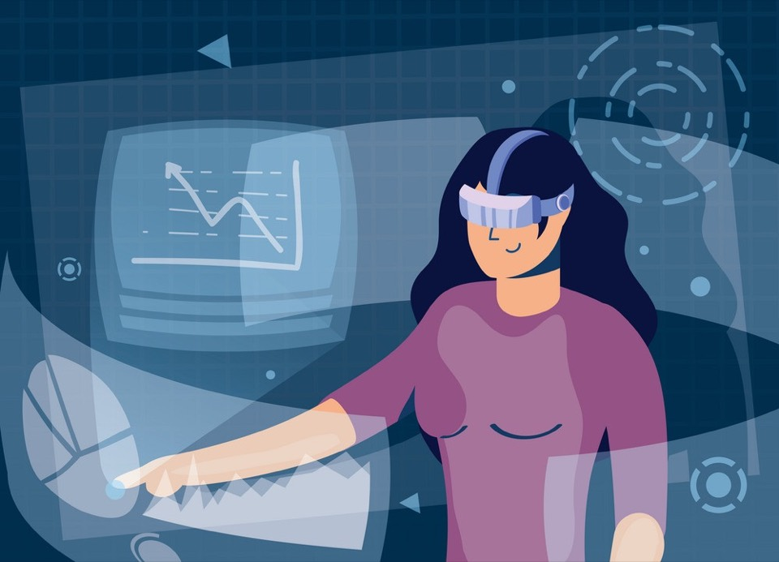
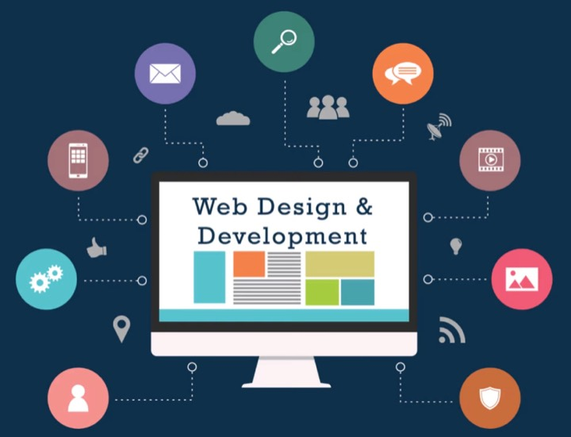
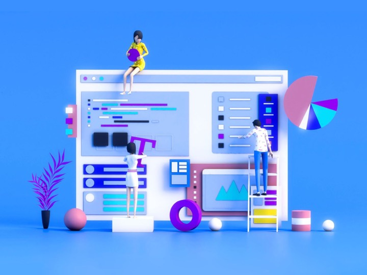
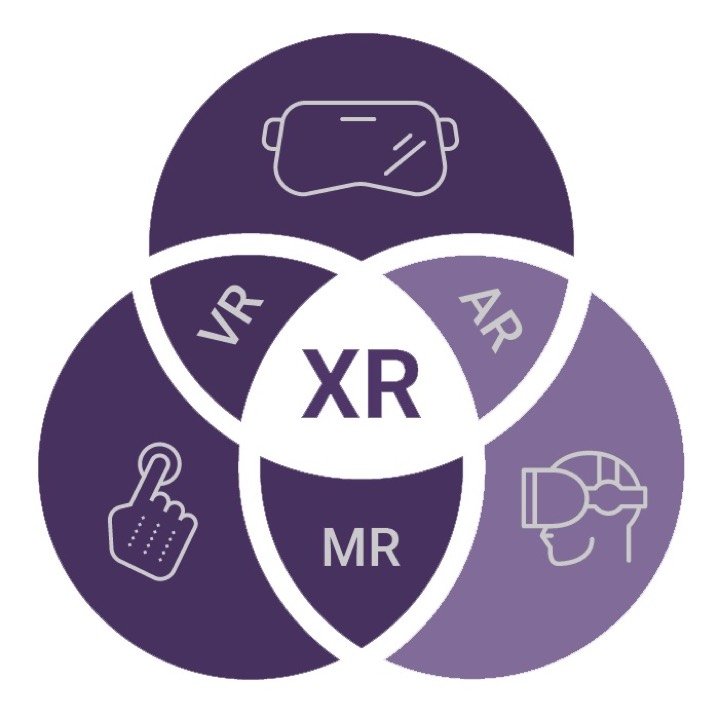
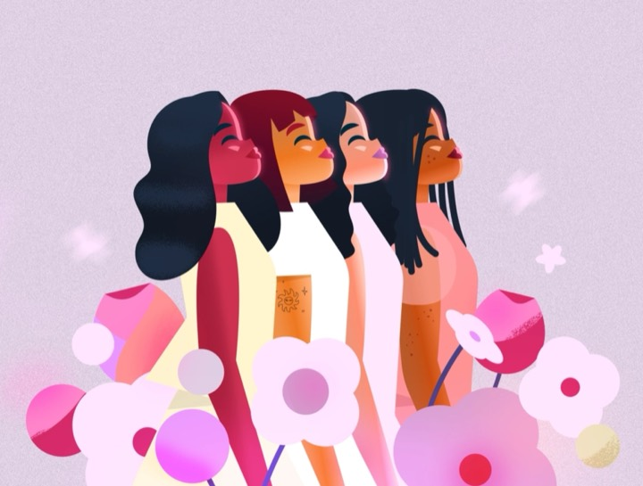

XR Camp · A free school for the immersive web
Build the web you can step into.
Learn to build websites, 3D worlds, and virtual and augmented reality experiences that run in a browser. Free for everyone, starting from your very first line of code.

Our mission
XR Camp is an online school that gives women the opportunity to become web designers and developers, with a focus on the immersive web: 3D, virtual reality, and augmented reality.
It is built first for women in Latin America and China, including women who have never written code. Lessons are written in English, Spanish, and Simplified Chinese.
Free, for everyone
XR Camp is completely free. There are no fees, no paywalls, and no accounts. Every lesson, starter file, and solution is in one public repository on GitHub.
It is created by women experts and by male allies committed to women’s empowerment.
Program
Learn from women experts and male allies from around the world, one 45-minute session at a time.
-

Web
Frontend design and development: HTML, CSS, and JavaScript.
-

Web 3D
Design and development in 3D: A-Frame, three.js, and X3D.
-

XR: VR and AR
Virtual and augmented reality in the browser, with WebXR.
-

Community
Community will blossom soon.
Illustration: “Women’s Day” by Iryna Korshak
Why

Damon Hernandez
San Francisco, USA & Helsinki, Finland
“Be the change you want to see.” Taking this to heart, with over 20 years in the immersive and web technology domains, I have dedicated my career to growing the use of these technologies around the world through presentations, workshops, events, meetups, hackathons, and other community initiatives.
In my continued pursuit to be a great ally to those in the community, this program’s goal is to enable any woman who is interested in web and immersive technologies to get her tech superpowers.
And for Sherine.
Now, step into the web you will build.
Keep scrolling. Everything below is built in 3D, with the tools you will learn here: HTML, A-Frame, and WebXR.
A 3D world in your first hour
You do not start with theory. In your first lesson you open a file, change a few words, and a 3D garden appears in your browser with your name on it. The garden at the start of the thread behind this text is a grown-up version of that first world.
<a-box position="-1.5 0.5 -4" color="#5b2a86"></a-box>Eight phases, from your first click to professional
Every phase ends with a real project you publish. Lessons are planned in 45-minute sessions that fit around work, study, and family, and every phase stands on its own.
-
Phase 0
Welcome to the Future
You will build: Your first 3D world, a timeline of the web, and a lab comparing three ways to build in 3D.
- 64 sessions of 45 minutes · about 4 months at 4 sessions a week
- 3 of 9 lessons ready in English
-
Phase 1
Become a Web Developer
You will build: Accessible, responsive websites, published for anyone in the world to visit.
- 144 sessions of 45 minutes · about 8 months at 4 sessions a week
- 1 of 9 lessons ready in English
-
Phase 2
Become a Frontend Engineer
You will build: Web apps that install on a phone, work offline, and use live data.
- 145 sessions of 45 minutes · about 8 months at 4 sessions a week
- 9 lessons, being written now
-
Phase 3
Become a Web3D Developer
You will build: Interactive 3D experiences with A-Frame and three.js.
- 138 sessions of 45 minutes · about 8 months at 4 sessions a week
- 7 lessons, being written now
-
Phase 4
Become an Immersive Developer
You will build: Virtual and augmented reality experiences that open in a headset from a link.
- 111 sessions of 45 minutes · about 6 months at 4 sessions a week
- 6 lessons, being written now
-
Phase 5
Become a Full-Stack Spatial Developer
You will build: Multi-user 3D applications with accounts, data, and real-time connections.
- 155 sessions of 45 minutes · about 9 months at 4 sessions a week
- 8 lessons, being written now
-
Phase 6
Become a Professional Developer
You will build: Production deployments, multilingual sites, and your own place in open source.
- 73 sessions of 45 minutes · about 4 months at 4 sessions a week
- 5 lessons, being written now
-
Phase 7
Professional Capstone
You will build: A complete immersive project: researched, designed, built, tested, and launched.
- 95 sessions of 45 minutes · about 5 months at 4 sessions a week
- 5 lessons, being written now
How it works
Everything is on GitHub
Every lesson, starter file, and solution is in one public repository. Download it, or fork it and make it yours.
Learn in 45-minute sessions
Every lesson tells you how many sessions it takes and what you will have built by the end of each one.
Use AI as a tutor, not a crutch
AI can explain almost anything. XR Camp teaches you to understand your code before you ask AI to change it.
Learn together
Community will blossom soon.
Accessible by design
This site works with a keyboard and a screen reader, and it respects your device’s motion settings. You can turn the 3D scene off at any time with the switch at the top of the page. Everything you build at XR Camp will meet the same standard.
Get involved
Want to teach, mentor, translate, or write a lesson? XR Camp is built by women experts and male allies, and there is a place for you.